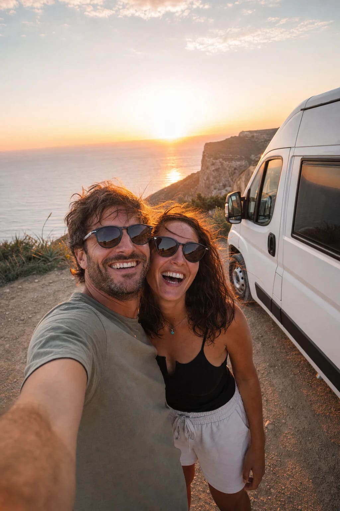

Banner vertical · Momentos · 320 × 640

Furgocasa
Para recordar siempre
Los mejores momentos
se viven en camper
Atardeceres, risas y carreteras sin fin. Alquila tu camper y crea tu historia.
Elige tu camper